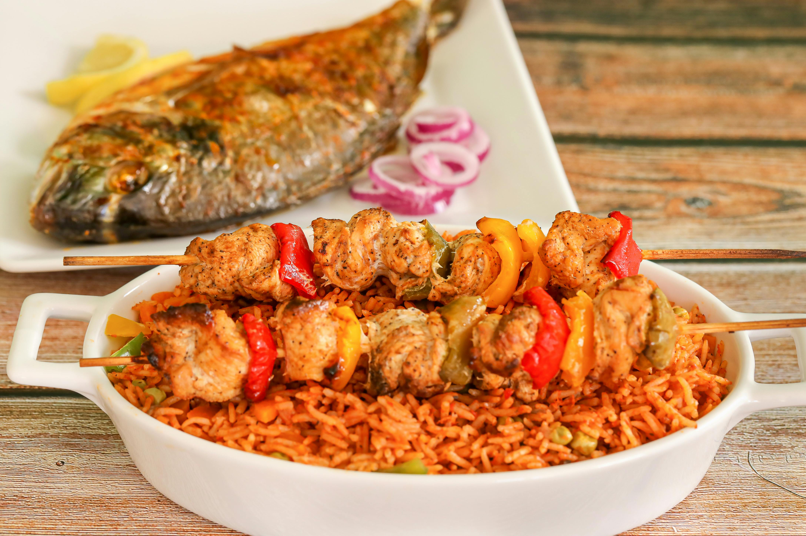
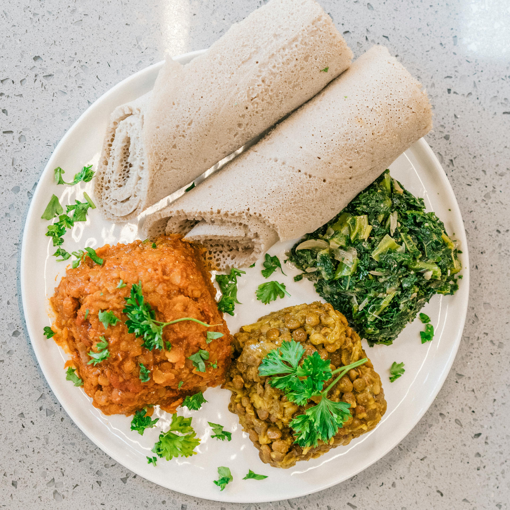

Jollof Rice
A West African one-pot dish made with rice, tomatoes, onions, and spices.
Injera
A traditional Ethiopian flatbread made from teff flour and served with various stews.
Bunny Chow

A South African street food consisting of hollowed-out bread filled with curry.
Moroccan Tagine
A slow-cooked savory stew, traditionally prepared in a clay pot.
Nyama Choma

A Kenyan-style roasted meat, often enjoyed with ugali and kachumbari.